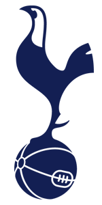

As a first generation student born and raised in India for the first nine years of my life, I have had to grab at all the opportunities I can get to be where I was today. In high school, I had the support of the Schuler Scholar Program, who enriched my life with opportunities for exposure and access to events I would never have had.
Since my education in the U.S. started, my hobbies have become more technology related. Some of my interests include being an avid fan of the Tottenham Hotspur soccer team based in London, being a general sports enthusiast, working with image manipulation softwares, video editing, animation, coding, and keeping up with current news, usually sports and world news.
Currently studying at Tufts University, I am majoring in Mechanical Engineering and minoring in Computer Science. I currently work for the Tufts Student Teaching Outreach and Mentorship Program (STOMP) as a mentor. In STOMP, I implement and teach engineering curriculum to students in local elementary schools. As I prepare for the future with my studies, I have set goals that I want to acccomplish in the short and long term futures.
My short term goal is to get an internship for the summer in the engineering field and start to do some side projects relating to Mechanical Engineering. My long term goals include graduating as a Mechanical Engineer from Tufts with a Computer Science minor and getting an entry level job as a Mechanical Engineer to gain experience in the field. I want to continue learning more about the sciences especially the fields of astrophysics and astronomy in order to further my career as a Mechanical Engineer working to discover, innovate, and excite.